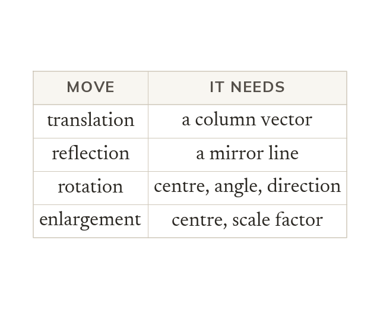
What each description needs
A full description names the transformation and every fact that fixes it. Leave one out, and the image could land elsewhere.
An exam question shows two shapes and says 'describe fully': each mark sits in one fact. Naming the move is not enough; the vector, mirror, centre, angle or scale factor fixes it.
Work down the page at your own pace. Write every answer in your book first, then click to check it.
Read each card, then follow the worked examples one step at a time.

A full description names the transformation and every fact that fixes it. Leave one out, and the image could land elsewhere.
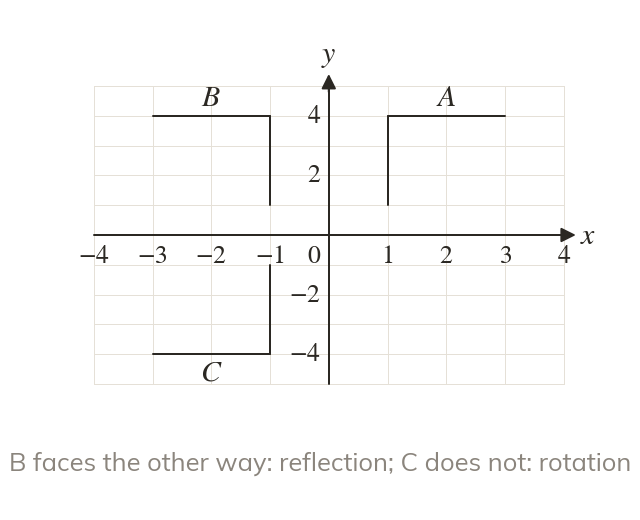
A reflected image faces the other way round. A rotated or translated image faces the same way.
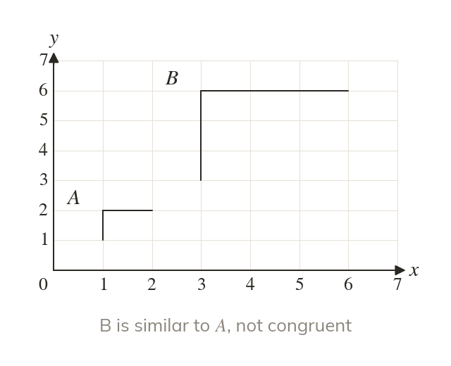
Translations, reflections and rotations keep every length: the image is congruent. An enlargement changes the lengths: the image is only similar.
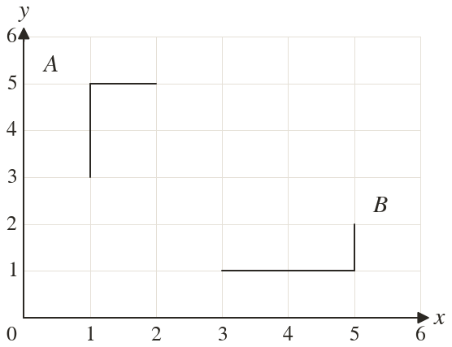
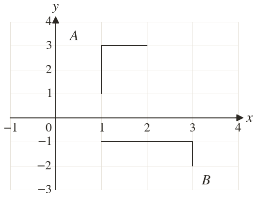
Pick an answer. If it's wrong, the feedback tells you which mistake it was.
Printable worksheet — the questions with room to work.


Read each card, then follow the worked examples one step at a time.
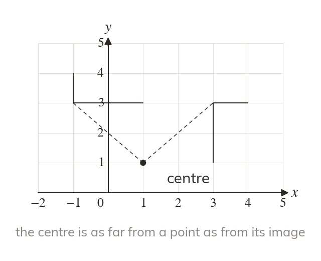
The centre is as far from each point as from its image. Tracing paper pinned there turns the shape onto its image.
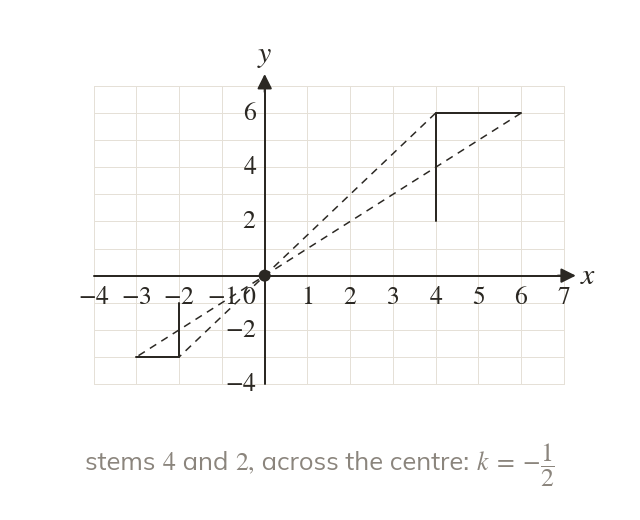
The scale factor is image length over object length. It is negative when the image is across the centre.
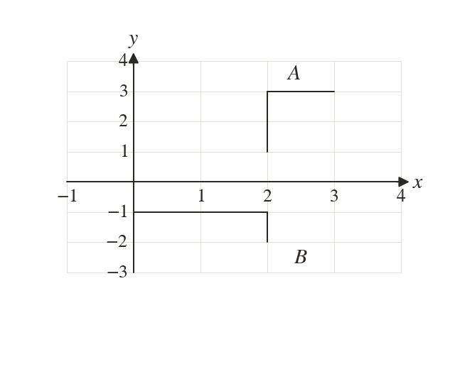
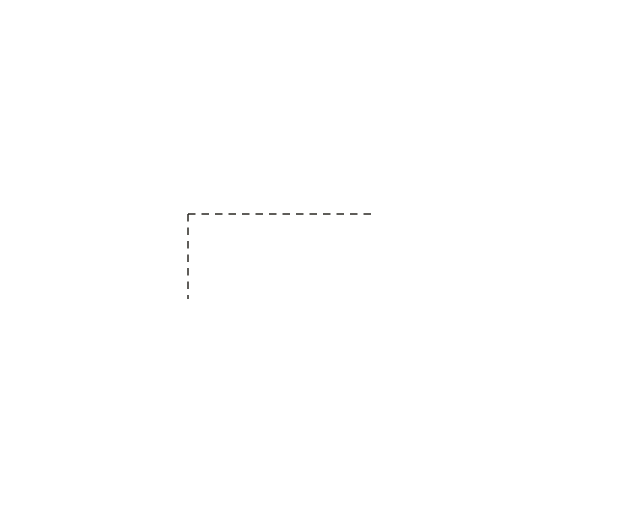
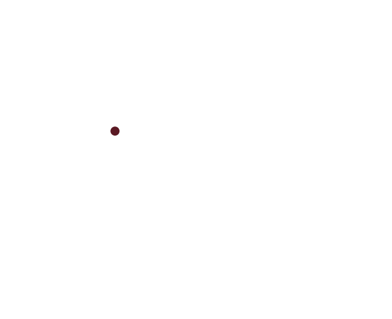
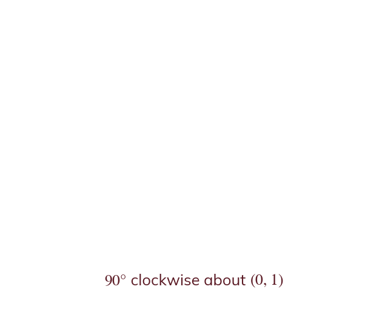
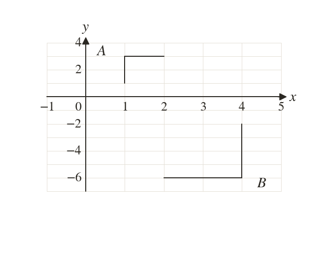
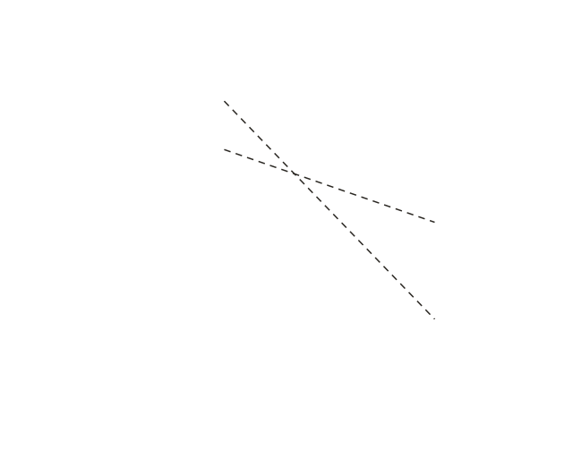
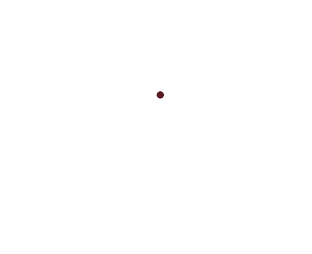
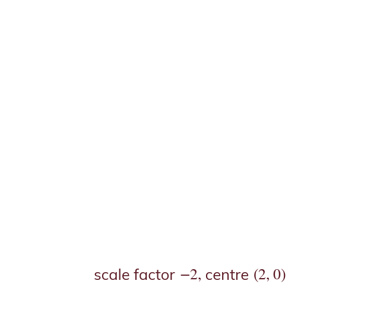
Pick an answer. If it's wrong, the feedback tells you which mistake it was.
Printable worksheet — the questions with room to work.
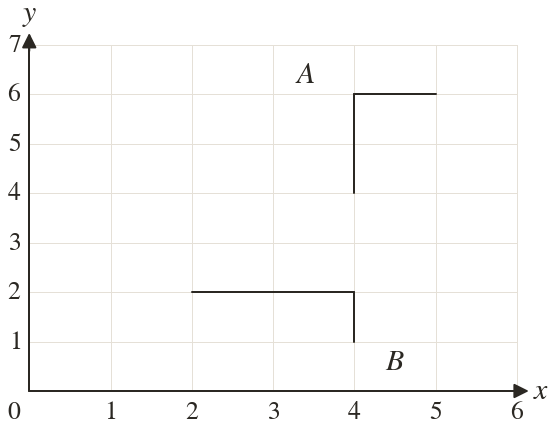
Finished? Next lesson: 10H.12.6 Combining Transformations.
Log in, then search for a code to practise that skill.
Videos, worksheets and more on each part of this lesson.